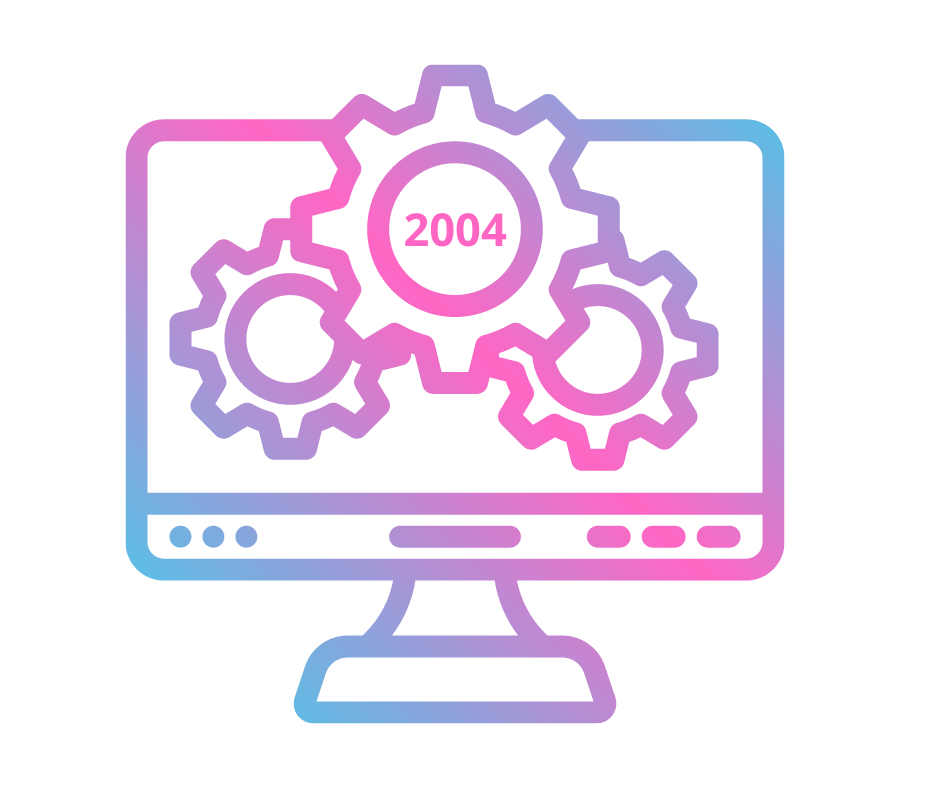
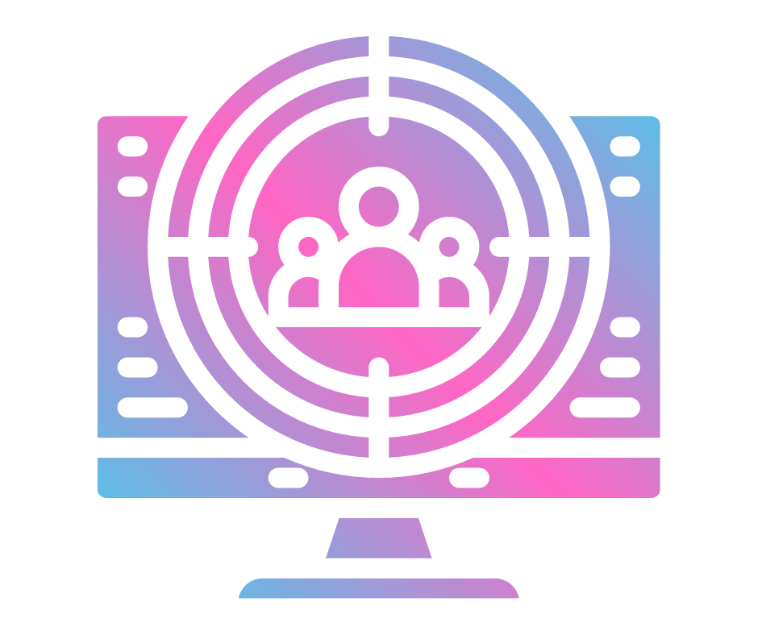
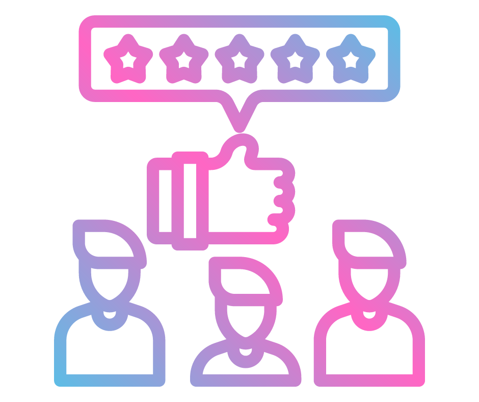
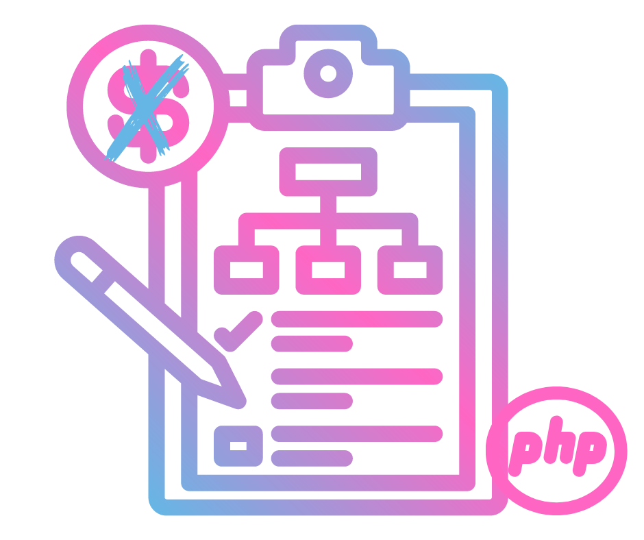

É possível publicar, organizar e compartilhar materiais de trabalho e de suporte a aprendizagem. Cada usuário tem a possibilidade de escolher quais os recursos serão
mostrados e para quais usuários.
.png)
O Elgg foi criado por um desenvolvedor escocês chamado Dave Tosh. Ele lançou a primeira versão do software em 2004 como um projeto de código aberto.
Desde então, o Elgg foi atualizado regularmente por uma equipe de desenvolvedores e mantenedores de todo o mundo.

É um dos mais populares softwares de rede social de código aberto e é usado por muitas empresas e organizações para criar suas próprias plataformas de rede social interna.

É projetado para ajudar as pessoas a criar suas próprias redes sociais ou comunidades on-line. É altamente personalizável e pode ser modificado para atender às necessidades específicas de uma comunidade on-line. 
É possível publicar, organizar e compartilhar materiais de trabalho e de suporte a aprendizagem. Cada usuário tem a possibilidade de escolher quais os recursos serão
mostrados e para quais usuários.
O Elgg é licenciado sob a Licença Pública Geral GNU, o que significa que é gratuito e pode ser modificado e distribuído livremente. É baseado na linguagem de programação PHP.
